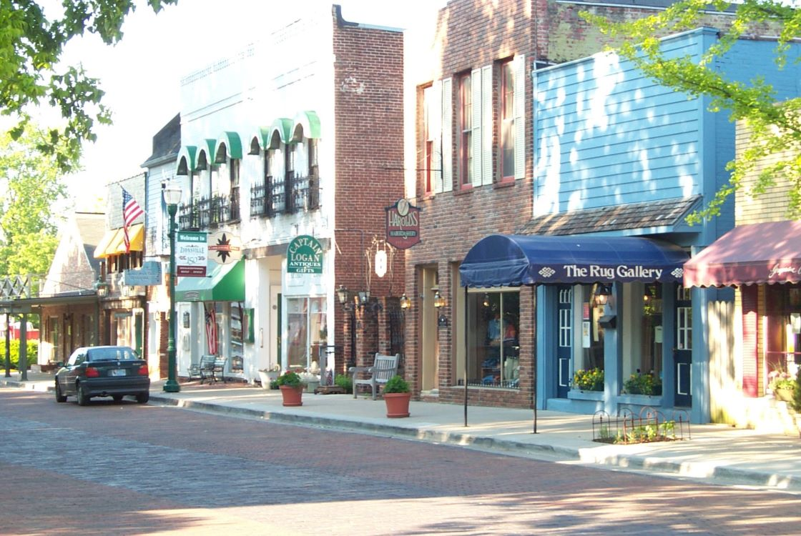

Charming town blending historic brick-lined streets, boutique shopping, and expansive parklands with a strong sense of community and Midwestern hospitality.
General Information
Zionsville Nature Center: Hours vary by season and programming
Farmers Market: Saturdays, mid-May to mid-September, 8am – 11:30am
Special programs and guided tours may have separate pricing
How to Get There
From Indianapolis (18 mi): Take I-65 N to Exit 130 for Whitestown Parkway. Turn right onto Whitestown Pkwy, then continue onto Oak Street into downtown Zionsville.
Overview
Zionsville, Indiana, is a small town in Boone County about 15 miles northwest of downtown Indianapolis, and it is known for its brick-paved Main Street, which is lined with independent boutiques, restaurants, and galleries in a historic village setting. It is one of the most affluent communities in Indiana and has a polished, walkable town center, the Traders Point Creamery, and a rural countryside of horse farms and preserved open space. The village is often called the "Village" by locals and has a distinctive charm that is rare in the suburbs of a large city.
Visitors come to Zionsville to shop and dine along Main Street, to hike and bike on the Big-4 Rail Trail, to visit the working dairy farm at Traders Point Creamery, and to attend seasonal events such as the Fourth of July parade, the farmers market, and the holiday Christmas events. The town is an easy escape from Indianapolis and makes a good half-day or day trip.
History
Zionsville was platted in 1851 and grew as a farm community when the Indianapolis, Cincinnati and Lafayette Railroad was built through the area, and its brick streets were laid in the early twentieth century. The railroad depot, the grain elevators, and the Main Street commercial buildings are reminders of its agricultural past. The town stayed small for many years, and in the late twentieth century its proximity to Indianapolis and its charming character attracted new residents and businesses. Zionsville's historic village district is now listed on the National Register of Historic Places.
Sightseeing and Popular Landmarks
The Main Street Village is the town's centerpiece, with its brick-paved streets, old-fashioned lampposts, and nearly 100 boutiques, galleries, and restaurants in nineteenth-century buildings. The Traders Point Creamery is a certified organic dairy that makes milk, cheese, and ice cream and has a restaurant and farm store, and the Traders Point Hunt, a fox-hunting club, has a historic rural landscape. The Zionsville Rail Trail and the Big-4 Rail Trail connect the town to nearby areas, and the Lincoln Park and Lions Park offer playgrounds and open space.
Culture and Museums
The Zionsville Town Hall and the Zionsville Public Library are historic buildings, and the town has a regular calendar of events, including the Fourth of July parade, the Zionsville Farmers Market on Saturdays, the Art in the Village events, and Christmas on Main Street. The Zionsville Community Theatre and the Boone County Historical Society preserve local history and arts, and the nearby Newfields and Indianapolis Zoo are within a short drive.
Parks
Zionsville is known for its parks and trails. The Big-4 Rail Trail is a paved trail that runs through the center of town and connects to other trail systems, and the Starkey Nature Park has woodland paths and ponds. The nearby Eagle Creek Park in Indianapolis, one of the largest city parks in the country, has a large reservoir, trails, and a bird sanctuary, and Traders Point Creamery's grounds are also used for walking and picnicking. Several neighborhood parks, such as Lincoln Park and Lions Park, round out the system.
Seasons and Weather
Zionsville has a humid continental climate with four seasons. Summers are warm and humid, with highs in the 80s°F, and winters are cold, with highs in the 30s°F and about 25 inches of snow. Spring and fall are mild and are the best times for walking and shopping, and the holiday season is especially popular, with decorated storefronts and a candlelight celebration.
Things to Do
Explore One of Indiana's Most Charming Small Towns
Zionsville is a picturesque town located just northwest of Indianapolis and is known for its brick-paved Main Street, historic architecture, boutique shopping, parks, and welcoming small-town atmosphere. Frequently recognized as one of Indiana's most desirable communities, Zionsville offers visitors a blend of history, outdoor recreation, local dining, and cultural experiences.
Stroll Along Historic Main Street
The heart of Zionsville is its iconic Main Street, lined with distinctive brick paving, locally owned shops, art galleries, cafes, restaurants, and historic buildings. Visitors can spend hours exploring unique boutiques, specialty stores, and seasonal community events that bring the downtown district to life.
Visit Traders Point Eagle Creek Rural Historic District
The town preserves aspects of its agricultural heritage through nearby historic districts and landmarks. Visitors can learn about the area's early settlement history while enjoying scenic rural landscapes and preserved historic properties.
Enjoy Parks and Outdoor Recreation
Zionsville offers numerous parks, trails, and recreational facilities. Popular destinations include Starkey Nature Park, Mulberry Fields, and nearby Eagle Creek Park, one of the largest municipal parks in the United States. Visitors can enjoy hiking, biking, wildlife viewing, picnicking, and family-friendly outdoor activities.
Experience Arts, Culture, and Community Events
Throughout the year, Zionsville hosts farmers markets, art walks, festivals, holiday celebrations, and cultural events. These activities contribute to the town's vibrant community atmosphere and make it a popular destination for both residents and visitors.
Top Trails
Big-4 Rail Trail
Length: Approximately 5.5 miles through Zionsville
Elevation Gain: Minimal
Difficulty: Easy
This popular paved trail follows a former railroad corridor and connects Zionsville with neighboring communities. It is ideal for walking, running, cycling, and enjoying scenic views of parks, woodlands, and residential areas.
Starkey Nature Park Trails
Length: Approximately 4 miles of trails
Elevation Gain: Minimal to Moderate
Difficulty: Easy to Moderate
Starkey Nature Park features wooded trails, creek crossings, and natural habitats that provide excellent opportunities for hiking, birdwatching, and nature photography. It is one of the town's premier outdoor destinations.
Eagle Creek Park Trails
Length: More than 16 miles of hiking trails nearby
Elevation Gain: Moderate
Difficulty: Easy to Moderate
A short drive from Zionsville, Eagle Creek Park offers extensive trail networks through forests, wetlands, and lakeside environments. Visitors can enjoy hiking, kayaking, fishing, wildlife observation, and outdoor education programs.
Zionsville Rail Trail & Downtown Walking Route
Length: Approximately 1 to 3 miles
Elevation Gain: Minimal
Difficulty: Easy
This route combines a stroll through historic downtown Zionsville with sections of the local trail system, providing access to shops, restaurants, parks, and community gathering spaces while showcasing the town's charm and character.
Sources: Visit Zionsville and Town of Zionsville visitor information regarding Main Street, community events, parks, trails, shopping, dining, and local attractions. https://www.zionsville-in.gov
Additional information verified through Zionsville Parks and Recreation resources covering Starkey Nature Park, the Big-4 Rail Trail, recreational facilities, and nearby Eagle Creek Park. https://www.zionsville-in.gov/parks
This article uses material from Wikipedia as well as information from official tourism and institutional sources. Key references include Visit Zionsville, Town of Zionsville, Traders Point Creamery, Eagle Creek Park, and National Weather Service Indianapolis. Wikipedia material is from the article "Zionsville, Indiana", and is available under the Creative Commons Attribution-Share-Alike License 3.0.
